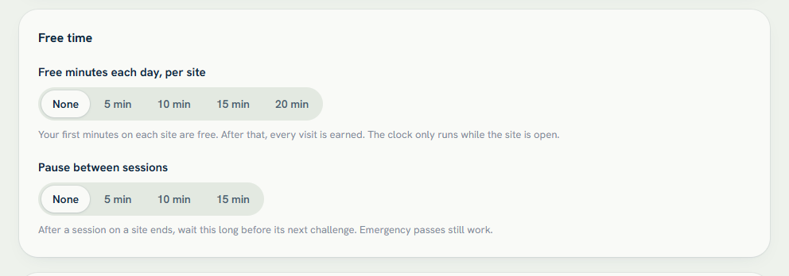
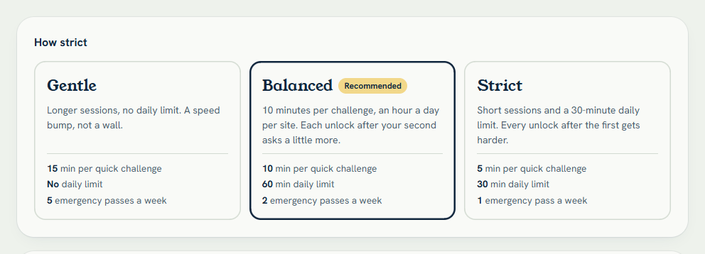

On this page
Every site on your list opens only after a short challenge. This guide covers how QuizBlock picks it, what it earns, how the clock counts and what each strictness setting changes.
QuizBlock picks the challenge
You don’t choose between a map and a quiz: QuizBlock does. It mostly takes turns between the two, brings back what you missed when it’s due, and adds new material as you go. A line on the gate says why it picked this one, such as “Questions this time, since your last challenge was a map.”
The challenge is saved for that site, so reloading the gate or coming back later that day shows the same one until you complete it. You can leave partway with the × or Esc, but you won’t earn time.
- Map: find a set of countries in one region, usually 10. If you’re stuck, Show me points it out, and that country comes back sooner. Once you know several countries in a region, a map sometimes asks for their capitals instead.
- Quiz: get 8 questions right from the subjects you chose. A missed question comes back once; miss it again and a spare takes its place. If the set runs out first, a fresh one is ready, and your answers still count towards your learning.
With no quiz subjects chosen, every challenge is a map.

The long challenge
Under the main button, Want longer? Take the long one instead offers the only alternative: a bigger map (usually 20 countries) or 15 questions: around 4 to 6 minutes. It pays more: 40, 30 or 20 minutes on Gentle, Balanced or Strict, against 15, 10 or 5 for the quick one.
A little harder as the day goes on
On Balanced, from your third unlock of the day on a site, each quick challenge asks for one more country or question, up to three more. Strict starts from the second unlock; Gentle never does. The gate shows which unlock you’re on, such as “Unlock 3 of the day on YouTube”.
The countdown
When you finish, the site opens for the minutes you earned. The countdown sits on the QuizBlock icon in the toolbar, not on the page, and the badge changes colour for the final minute. If you’re watching full screen, where the toolbar is hidden, a small countdown shows in the corner for that last minute.
The clock only runs while the site is open in a tab. Close every tab of it and the clock pauses; open it again and it carries on. To stop early, click the QuizBlock icon while you’re on the site and choose I’m done, lock it. The minutes left over don’t come back.
Free minutes
Each site gets free minutes every day before it needs a challenge: 10 unless you chose otherwise at setup. They’re per site (10 on YouTube and 10 on Reddit) and count down like earned time. Change them in Settings → Free time.

Daily limits
Balanced allows 60 minutes a day on each site, Strict 30, and Gentle has no limit. Free minutes, earned time and emergency passes all count towards it. When less than a full session is left, a challenge pays only what’s left.
Once a site’s limit is used, the gate says “That’s YouTube for today.” You can still Practise anyway: your answers count towards your learning but earn no time. The site opens again tomorrow.
To give one site its own limit, open Sites, click the site and choose a Daily limit: Use setting, 30, 60, 90 or 120 minutes, or No limit. A lower limit applies at once; a higher one starts tomorrow.
Unused time lapses at midnight
Earned and free minutes are for the day you get them. Whatever’s left when the day ends lapses, so time can’t be saved up. A session running at midnight carries on, counting towards the new day’s limit.
The three strictness settings
| What changes | Gentle | Balanced | Strict |
|---|---|---|---|
| A quick challenge earns | 15 min | 10 min | 5 min |
| The long challenge earns | 40 min | 30 min | 20 min |
| Daily limit per site | None | 60 min | 30 min |
| Challenges grow | Never | From the 3rd unlock | From the 2nd unlock |
| Emergency passes a week | 5 | 2 | 1 |
| Questions to switch a site off | 15 | 20 | 25 |
Change it in Settings → How strict. A stricter setting applies at once; a gentler one starts tomorrow (see change your rules).

Emergency passes
For a quick check, the gate’s I need it for something specific link offers an emergency pass: the site opens for 3 minutes without a challenge, after a short pause of 15, 30 or 60 seconds, depending on strictness. Passes reset every Monday.
Block completely
In Sites, set When you visit to Block completely, and the gate offers no challenge, no free minutes and no passes. Blocking is instant; going back to Ask for a challenge takes the same quiz as switching a site off. Focus hours block your sites completely at set times.
When time runs out
Every open tab of the site switches to the gate, which says “Time’s up on YouTube.” You can earn more straight away, or close the tab. If you’ve set a Pause between sessions in Settings → Free time, the next challenge is ready once the pause is over.